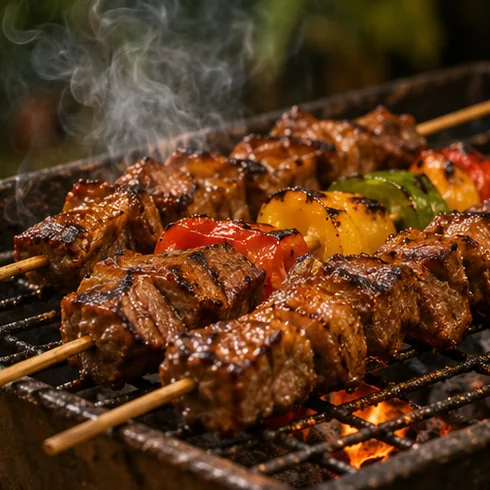
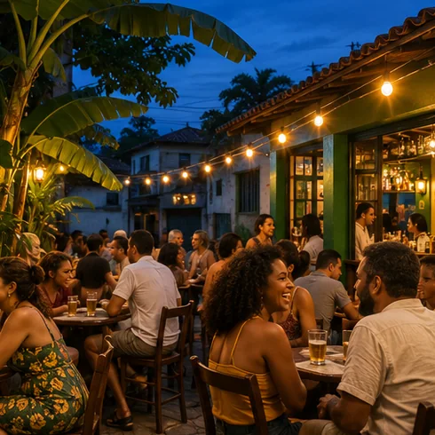
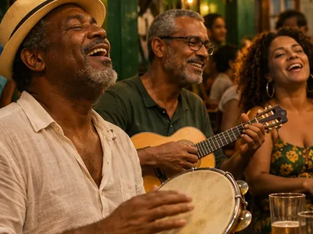
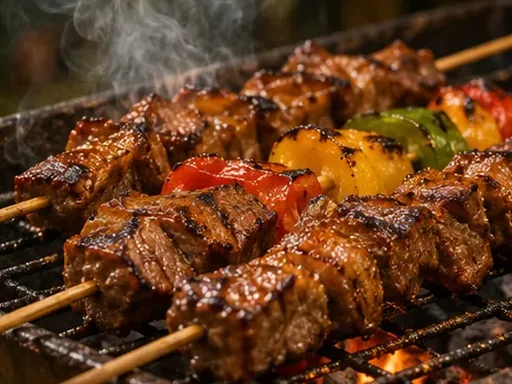
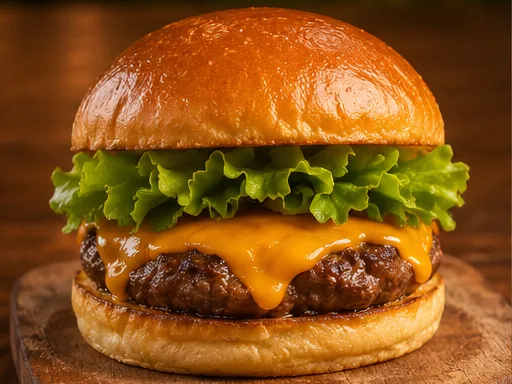
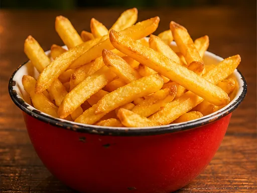
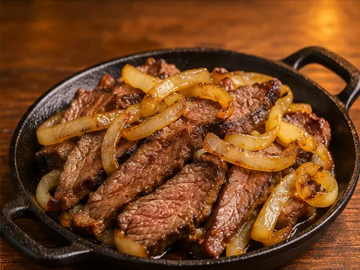
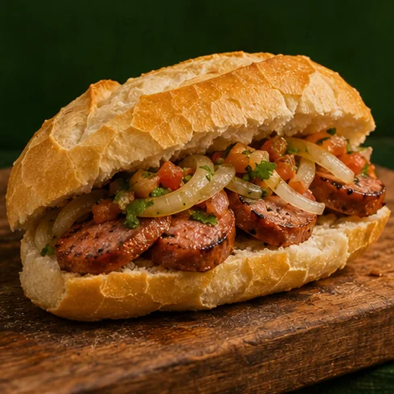
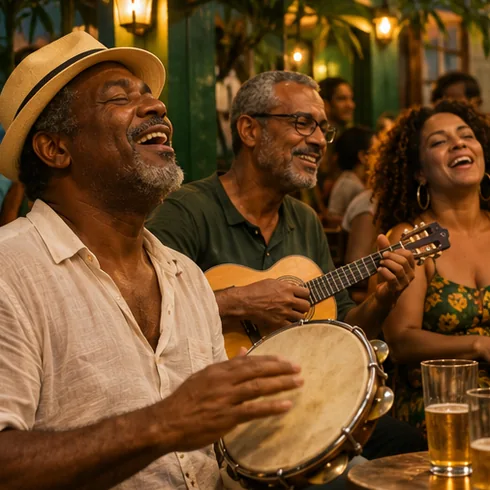

Espetos e petiscos
- Espetinho de carneCarne na brasa, com farofa e vinagrete.
- Espetinho de frangoFrango temperado, dourado na grelha.
- Batata fritaPorção crocante para dividir.
Bento Ribeiro, Rio de Janeiro Bar e lanchonete
Sobre o Sambiquira
O Sambiquira é um bar e lanchonete em Bento Ribeiro feito para sentar sem pressa, pedir um espeto e colocar a conversa em dia. Aqui, o clima é de boteco carioca, com espaço na mesa pra quem chega e samba na batida.






Cardápio
[EDITAR] Sugestões de cardápio. Itens, disponibilidade e preços a confirmar.


Agenda da casa
[EDITAR] Datas, horários e atrações a confirmar.
Cavaquinho, pandeiro e samba de raiz.
Refrões conhecidos pra cantar junto.

Galeria
[EDITAR] Imagens ilustrativas da brasa, da roda e do ambiente.
Localização
[EDITAR] Grafia da rua e número a confirmar. O mapa mostra o bairro.
Contato
[EDITAR] Horário de funcionamento a confirmar.
[EDITAR] WhatsApp e Instagram oficiais a confirmar.